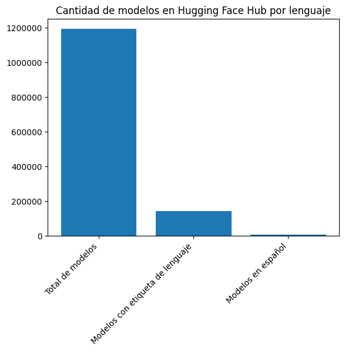
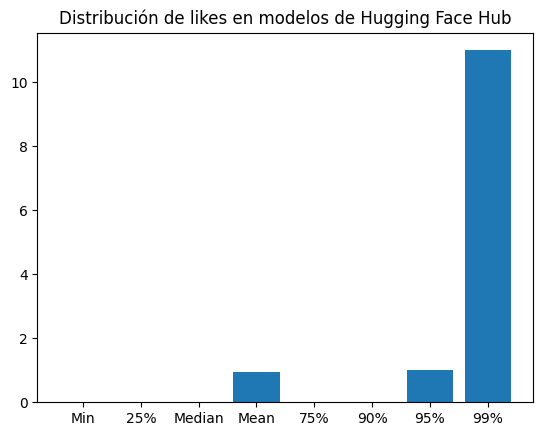
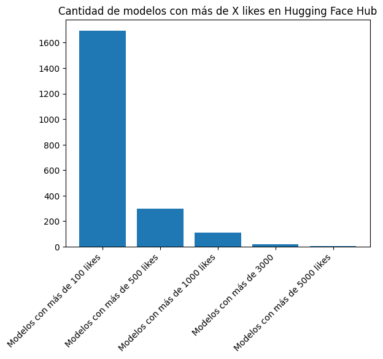
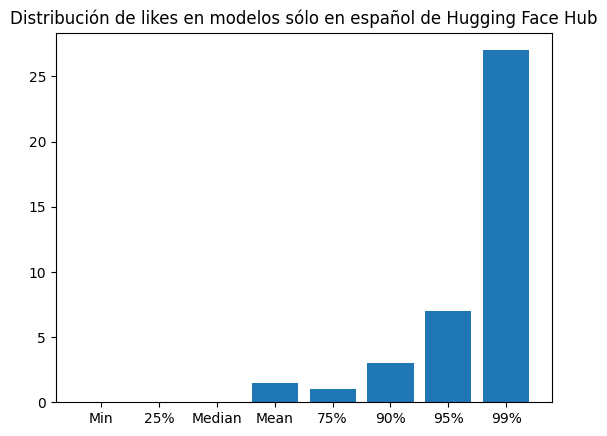
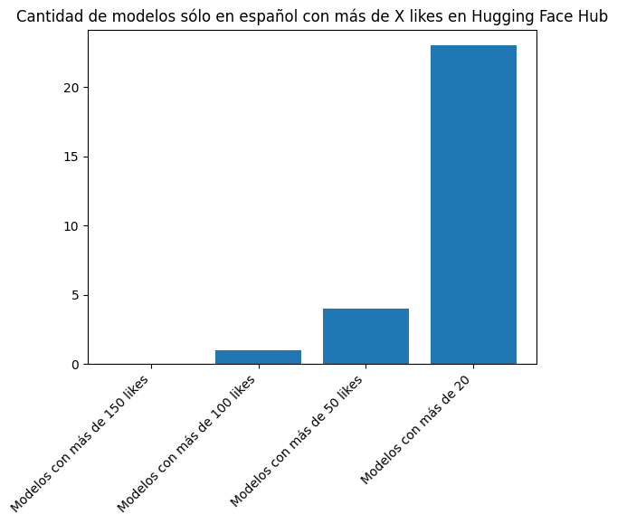
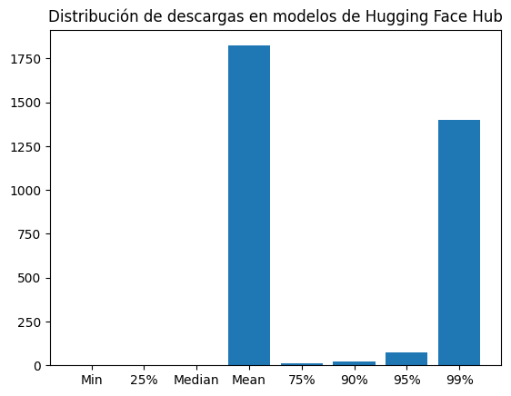
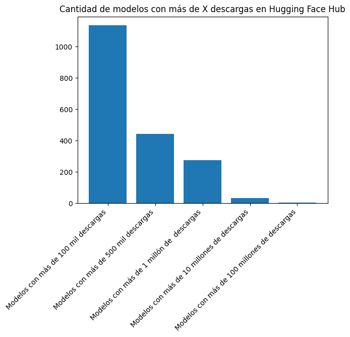
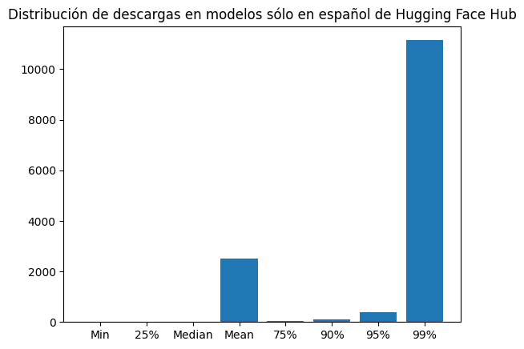
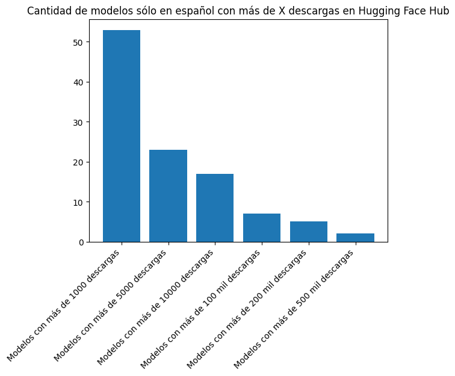

Code
from huggingface_hub import HfApi
api = HfApi()
models = api.list_models()
models_es = api.list_models(filter="es")Modelos de Lenguaje en Español
Martin Olmos
December 18, 2024
One of the topics discussed during the 2nd Ministerial Meeting on AI Ethics in LAC was the need for the region to advance in the development of language models in Ibero-American languages, particularly in Spanish.
One of the main Hubs for generative AI models is Hugging Face, which offers an API to access and host pre-trained models, datasets, and “Spaces” (web applications based on existing models in the Hub).
We can use the Hugging Face API to analyze the quantity, quality, and usage of models, datasets, and Spaces in Spanish and compare them with other languages such as English.
Let’s first see how many models are in the Huggingface Hub and how many of them are in Spanish.
11914006444We see that there are currently 1,191,400 models in the Hub, of which 6,444 are in Spanish.
Let’s now take one of the models to see the available metadata.
{'id': 'mistralai/Mistral-Large-Instruct-2411',
'author': None,
'sha': None,
'last_modified': None,
'created_at': datetime.datetime(2024, 11, 14, 20, 3, 52, tzinfo=datetime.timezone.utc),
'private': False,
'gated': None,
'disabled': None,
'downloads': 488732,
'downloads_all_time': None,
'likes': 165,
'library_name': 'vllm',
'gguf': None,
'inference': None,
'tags': ['vllm',
'safetensors',
'mistral',
'en',
'fr',
'de',
'es',
'it',
'pt',
'zh',
'ja',
'ru',
'ko',
'license:other',
'region:us'],
'pipeline_tag': None,
'mask_token': None,
'trending_score': 5,
'card_data': None,
'widget_data': None,
'model_index': None,
'config': None,
'transformers_info': None,
'siblings': None,
'spaces': None,
'safetensors': None,
'security_repo_status': None,
'lastModified': None,
'cardData': None,
'transformersInfo': None,
'_id': '673657a8517b82b436cb7e4c',
'modelId': 'mistralai/Mistral-Large-Instruct-2411'}We see that within the tags field there are tags that indicate the language in ISO 639-1 code. We can use these tags to analyze the data by language.
First, I will download a dataset of ISO 639-1 codes.
alpha2 English
0 aa Afar
1 ab Abkhazian
2 ae Avestan
3 af Afrikaans
4 ak AkanNow for each model in my list of models and models in Spanish, I will create a languages attribute and assign the ISO 639-1 codes that I find in the tags field.
Let’s see how many models have at least one language tag.
(143924, 6444)Only 143,924 models have at least one language tag. Of these, 6,444 are in Spanish.
import matplotlib.pyplot as plt
from matplotlib.ticker import ScalarFormatter
# Make a bar plot of len(models_list), len(languages) and len(languages_es)
plt.bar(["Total de modelos", "Modelos con etiqueta de lenguaje", "Modelos en español"], [len(models_list), len(languages), len(languages_es)])
# Rotate the x-axis labels 45 degrees
plt.xticks(rotation=45, ha="right")
# Add a title
plt.title("Cantidad de modelos en Hugging Face Hub por lenguaje")
# Disable scientific notation
plt.gca().yaxis.set_major_formatter(ScalarFormatter(useOffset=False))
plt.gca().ticklabel_format(style='plain', axis='y')
# Show the plot
plt.show()
Another interesting question is how many models are “pure” in Spanish models, that is, they do not have tags for other languages.
1568The models only in Spanish are 1568.
Let’s now look at quality metrics, such as the number of likes and downloads of the Spanish models, compared to those in other languages.
(1191400, 1092628, 49002)From the total of 1,191,400 models, 1,092,628 have 0 likes and 49,002 have 1 like.

As seen in the graph, 90% of the models have 0 likes, 95% have 0 or 1 like, and 99% have 11 likes or less.
Let’s focus on those with the most likes.
plt.bar(["Modelos con más de 100 likes", "Modelos con más de 500 likes", "Modelos con más de 1000 likes", "Modelos con más de 3000", "Modelos con más de 5000 likes"], [len([l for l in likes if l > 100]), len([l for l in likes if l > 500]), len([l for l in likes if l > 1000]), len([l for l in likes if l > 3000]), len([l for l in likes if l > 5000])])
plt.title("Cantidad de modelos con más de X likes en Hugging Face Hub")
# Rotate the x-axis labels 45 degrees
plt.xticks(rotation=45, ha="right")
plt.show()
Let’s now see what happens with the models that are only in Spanish.
(1568, 1138, 166)From the total of 1,568 models that are only in Spanish, 1,138 have 0 likes and 430 have 1 like.

{'Min': np.int64(0), '25%': np.float64(0.0), 'Median': np.float64(0.0), 'Mean': np.float64(1.5012755102040816), '75%': np.float64(1.0), '90%': np.float64(3.0), '95%': np.float64(7.0), '99%': np.float64(27.0)}The average number of likes for models only in Spanish is 1.5, 75% of the models have 1 like or less, 90% have 3 likes or less, 95% have 7 likes or less, and 99% have 27 likes or less.
Let’s now look at the models only in Spanish with the most likes.
plt.bar(["Modelos con más de 150 likes", "Modelos con más de 100 likes", "Modelos con más de 50 likes", "Modelos con más de 20"], [len([l for l in likes_es if l > 150]), len([l for l in likes_es if l > 100]), len([l for l in likes_es if l > 50]), len([l for l in likes_es if l > 20])])
plt.title("Cantidad de modelos sólo en español con más de X likes en Hugging Face Hub")
# Rotate the x-axis labels 45 degrees
plt.xticks(rotation=45, ha="right")
plt.show()
0 1 4 23There is only one model only in Spanish with 100 likes or more, while 4 models have 50 likes or more and 23 models have 20 likes or more.
Let’s now look at the downloads.
(1191400, 588526, 26337)From the total of 1,191,400 models, 588,526 (approximately half) have 0 downloads.

{'Min': np.int64(0), '25%': np.float64(0.0), 'Median': np.float64(1.0), 'Mean': np.float64(1823.2946558670471), '75%': np.float64(11.0), '90%': np.float64(23.0), '95%': np.float64(76.0), '99%': np.float64(1398.0)} 181462888The average number of downloads for the models is 1823, while the median is just 1. This large difference indicates that there are a few models with a large number of downloads that make the average so high.
The model with the most downloads has 181,462,888 downloads. Let’s see which model this is.
plt.bar(["Modelos con más de 100 mil descargas", "Modelos con más de 500 mil descargas", "Modelos con más de 1 millón de descargas", "Modelos con más de 10 millones de descargas", "Modelos con más de 100 millones de descargas"], [len([l for l in downloads if l > 100000]), len([l for l in downloads if l > 500000]), len([l for l in downloads if l > 1000000]), len([l for l in downloads if l > 10000000]), len([l for l in downloads if l > 100000000])])
plt.title("Cantidad de modelos con más de X descargas en Hugging Face Hub")
# Rotate the x-axis labels 45 degrees
plt.xticks(rotation=45, ha="right")
plt.show()
1134 443 273 34 3There are 1,134 models with more than 100,000 downloads, 443 with more than 500,000 downloads, 273 with more than 1 million downloads, 34 with more than 10 million downloads, and 3 with more than 100 million downloads.
Let’s see which models have more than 10 million downloads.
Modelo: nesaorg/benchmark_v0, descargas: 172569176
Modelo: sentence-transformers/all-MiniLM-L6-v2, descargas: 102361718
Modelo: Qwen/Qwen2.5-1.5B-Instruct, descargas: 29787495
Modelo: openai-community/gpt2, descargas: 13635588
Modelo: google-bert/bert-base-uncased, descargas: 69032646
Modelo: openai/clip-vit-large-patch14, descargas: 30593669
Modelo: openai/clip-vit-base-patch32, descargas: 21394717
Modelo: sentence-transformers/all-mpnet-base-v2, descargas: 181462888
Modelo: pyannote/speaker-diarization-3.1, descargas: 11145540
Modelo: sentence-transformers/paraphrase-multilingual-MiniLM-L12-v2, descargas: 10717417
Modelo: pyannote/segmentation-3.0, descargas: 14657651
Modelo: bartowski/Meta-Llama-3.1-8B-Instruct-GGUF, descargas: 10642781
Modelo: FacebookAI/roberta-base, descargas: 16983687
Modelo: sentence-transformers/all-MiniLM-L12-v2, descargas: 10686154
Modelo: openai/clip-vit-large-patch14-336, descargas: 20836111
Modelo: distilbert/distilbert-base-uncased, descargas: 15451802
Modelo: microsoft/resnet-50, descargas: 34636864
Modelo: FacebookAI/xlm-roberta-large, descargas: 71149467
Modelo: google-bert/bert-base-multilingual-uncased, descargas: 12923212
Modelo: FacebookAI/roberta-large, descargas: 14851944
Modelo: FacebookAI/xlm-roberta-base, descargas: 12074140
Modelo: google/electra-base-discriminator, descargas: 10615222
Modelo: google/vit-base-patch16-224-in21k, descargas: 10802933
Modelo: jonatasgrosman/wav2vec2-large-xlsr-53-english, descargas: 20671837
Modelo: openai/clip-vit-base-patch16, descargas: 13014792
Modelo: bigscience/bloomz-560m, descargas: 12417679
Modelo: timm/resnet50.a1_in1k, descargas: 24015981
Modelo: pyannote/wespeaker-voxceleb-resnet34-LM, descargas: 12499697
Modelo: nesaorg/fc_12, descargas: 26749830
Modelo: nesaorg/fc_4, descargas: 19983316
Modelo: nesaorg/fc_6, descargas: 39967060
Modelo: nesaorg/fc_8, descargas: 54180206
Modelo: nesaorg/fc_16, descargas: 12477680
Modelo: distributed/optimized-gpt2-1b, descargas: 25559944Let’s now look at the downloads of the models only in Spanish.
1568 248Of the 1,568 models only in Spanish, 248 have 0 downloads.
dl_es_dist = {"Min": np.min(downloads_es), "25%": np.quantile(downloads_es, 0.25), "Median": np.median(downloads_es), "Mean": np.mean(downloads_es), "75%": np.quantile(downloads_es, 0.75), "90%": np.quantile(downloads_es, 0.9), "95%": np.quantile(downloads_es, .95), "99%": np.quantile(downloads_es, .99)}
{'Min': np.int64(0), '25%': np.float64(9.0), 'Median': np.float64(15.0), 'Mean': np.float64(2504.596301020408), '75%': np.float64(27.0), '90%': np.float64(99.59999999999991), '95%': np.float64(376.8999999999992), '99%': np.float64(11140.349999999986)}The average number of downloads for models only in Spanish is 2504, while 95% of the models have 377 downloads or less.
plt.bar(["Modelos con más de 1000 descargas", "Modelos con más de 5000 descargas", "Modelos con más de 10000 descargas", "Modelos con más de 100 mil descargas", "Modelos con más de 200 mil descargas", "Modelos con más de 500 mil descargas"], [len([l for l in downloads_es if l > 1000]), len([l for l in downloads_es if l > 5000]), len([l for l in downloads_es if l > 10000]), len([l for l in downloads_es if l > 100000]), len([l for l in downloads_es if l > 200000]), len([l for l in downloads_es if l > 500000])])
plt.title("Cantidad de modelos sólo en español con más de X descargas en Hugging Face Hub")
# Rotate the x-axis labels 45 degrees
plt.xticks(rotation=45, ha="right")
plt.show()
53 23 17 7 5 2Let’s see which models only in Spanish have more than 100,000 downloads.
Modelo: MMG/xlm-roberta-large-ner-spanish, descargas: 657221
Modelo: dccuchile/bert-base-spanish-wwm-uncased, descargas: 458065
Modelo: hiiamsid/sentence_similarity_spanish_es, descargas: 131325
Modelo: pysentimiento/robertuito-emotion-analysis, descargas: 117978
Modelo: pysentimiento/robertuito-sentiment-analysis, descargas: 1111575
Modelo: datificate/gpt2-small-spanish, descargas: 480166
Modelo: finiteautomata/beto-sentiment-analysis, descargas: 461003
[None, None, None, None, None, None, None]